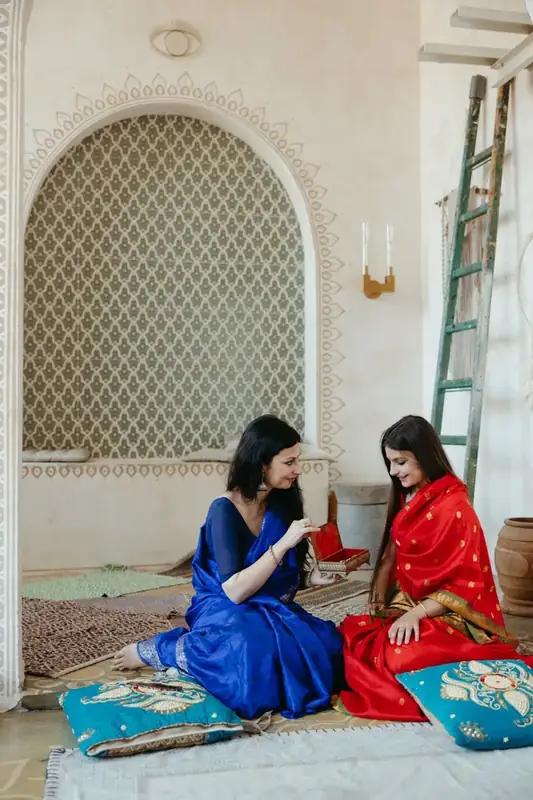
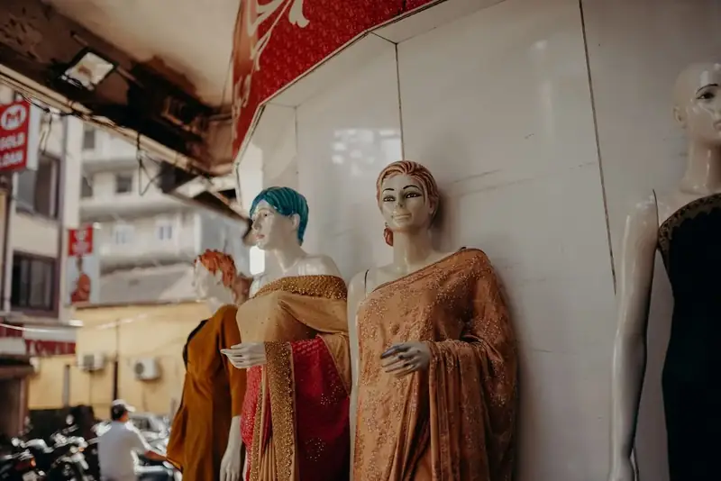
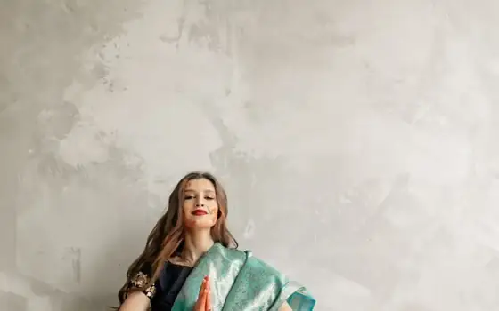
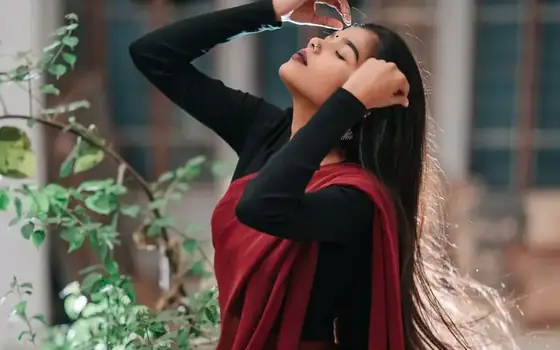
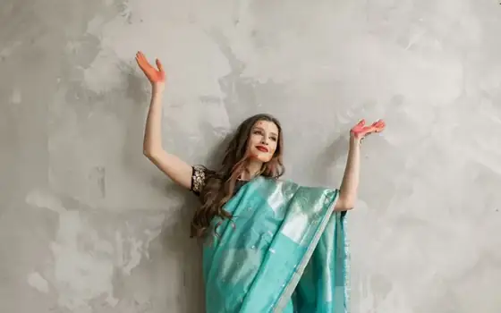
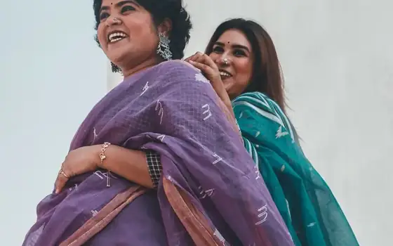
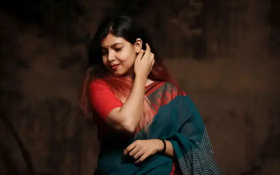

See how it
falls.
A saree photographed flat tells you the colour and nothing else. Drape is the rest of the decision — how heavy it hangs, how the light runs along the weft, whether it holds a fold. Here you can watch it move.
Five weaves, turning.
Each of these hangs differently because each is spun and beaten differently. Pick one and the cloth above changes with it.
Four weavers, one district.
Every piece here comes off a pit loom in Nadia or Hooghly, from a family we buy from directly. No aggregator, no middle warehouse, no story about artisans we have never met.
- Paid per piece, agreed before weaving starts
- Yarn count and dye lot recorded on every tag
- Handloom mark where the piece qualifies
- Repairs done in-house, not refused


It will outlast you, if you let it.
Handloom does not like machines and does not need them. The rules are short and they are the same ones your grandmother used.
- Dry clean the first wash; cold hand wash after
- Dry in shade — direct sun flattens natural dye
- Refold along a different line every few months
- Cotton, never plastic, for storage
Six yards, worn.
Drape is what the 3D above is for. This is the other half of the decision — how a weave actually reads on a person, in daylight.






Come and feel it.
Screens are good for drape and useless for hand-feel. Tell us which weave caught you and we will have it out of the drawer when you arrive.